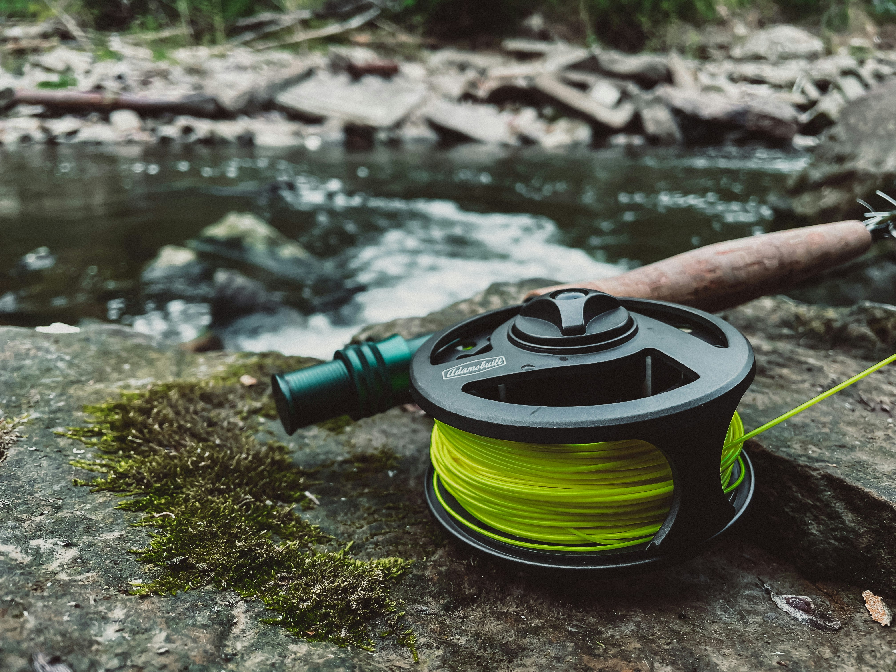

Flies for Arizona Waters

Fly selection starts with reading the water: are trout sipping small insects from the surface, or are bass chasing baitfish along weed edges? Carry a mix of dry flies, nymphs, and streamers so you can switch tactics when the sun, wind, or hatch changes. Local shops post weekly updates on what fish are eating—pair that intel with the seasonal guide below.
In high-country creeks, small sizes and delicate tippets often outperform big attractors. On large reservoirs, weighted flies and sinking lines get patterns into the strike zone faster. Organize your box by season and water type so you spend less time searching and more time casting.
Seasonal fly quick reference
The table summarizes a few reliable patterns. Adjust size and color to match local hatches and forage. When in doubt, start with a generalist nymph and a visible dry fly as an indicator where regulations allow.
| Fly name | Best season | Target fish |
|---|---|---|
| Elk hair caddis | Spring and summer | Trout |
| Woolly bugger | Year-round | Bass, trout |
| Pheasant tail nymph | Fall and winter | Trout |
Strategies by time of year
Spring: Rising water temperatures can trigger baetis and midge activity. Fish nymphs deep in the morning and watch for surface rises as the day warms. On lakes, bass move shallow to spawn—slow retrieves with streamers and weighted flies work along structure.
Summer: Start early to avoid midafternoon heat on small streams. Terrestrials like ants and hoppers become important when grasses dry out. On reservoirs, fish deeper during bright midday sun and look for shade lines and drop-offs.
Fall and winter: Midges dominate many tailwater-style beats; carry small zebra midges and RS2s. In mild spells, bass and panfish may still chase streamers near rocky banks. Always check regulations for seasonal closures and bait restrictions.